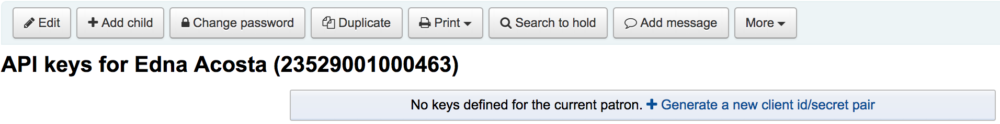

Web services
Koha 提供若干 API 近用其資料與功能。
OAI-PMH
開放檔案存取協定 (OAI-PMH) 有兩組 ‘參與者’：資料提供者與服務提供者。資料提供者 (開放檔案、典藏庫) 提供自由近用的後設資料，以及可能，但不是必要的，自由近用全文或其他資源。OAI-PMH 提供簡便、低門檻的解決方案給資料提供者。服務提供者運用資料提供者的 OAI 介面擷取並儲存後設資料。沒有向資料提供者提出即時搜尋要求；而是，以OAI-PMH 擷取資料。
OAI-PMH 詳情見：http://www.openarchives.org/pmh/
Koha at present can only act as a Data Provider. It can not harvest from other repositories. The biggest stumbling block to having Koha harvest from other repositories is that MARC is the only metadata format that Koha indexes natively.
To enable OAI-PMH in Koha edit the OAI-PMH preference. Once enabled you can visit http://YOURKOHACATALOG/cgi-bin/koha/oai.pl to see your file.
By default Koha won’t include item information in OAI-PMH result sets, but they can be added by using the include_items option in the a configuration file linked from OAI-PMH:ConfFile.
Note that the sample conf file below contains both marc21 and marcxml, because marc21 is the metadata prefix recommended by the OAI-PMH guidelines while marcxml was the only one in the sample before Koha 23.11 (and support for marc21 was added in Koha 17.05).
Sample OAI conf file
format:
vs:
metadataPrefix: vs
metadataNamespace: http://veryspecial.tamil.fr/vs/format-pivot/1.1/vs
schema: http://veryspecial.tamil.fr/vs/format-pivot/1.1/vs.xsd
xsl_file: /usr/local/koha/xslt/vs.xsl
marc21:
metadataPrefix: marc21
metadataNamespace: http://www.loc.gov/MARC21/slim http://www.loc.gov/standards/marcxml/schema/MARC21slim
schema: http://www.loc.gov/MARC21/slim http://www.loc.gov/standards/marcxml/schema/MARC21slim.xsd
include_items: 1
marcxml:
metadataPrefix: marcxml
metadataNamespace: http://www.loc.gov/MARC21/slim http://www.loc.gov/standards/marcxml/schema/MARC21slim
schema: http://www.loc.gov/MARC21/slim http://www.loc.gov/standards/marcxml/schema/MARC21slim.xsd
include_items: 1
oai_dc:
metadataPrefix: oai_dc
metadataNamespace: http://www.openarchives.org/OAI/2.0/oai_dc/
schema: http://www.openarchives.org/OAI/2.0/oai_dc.xsd
xsl_file: /usr/local/koha/koha-tmpl/intranet-tmpl/xslt/UNIMARCslim2OAIDC.xsl
SRU 伺服器
Koha 經由 URL (SRU) 通信協定執行搜尋/取得作業。詳情請參見 http://www.loc.gov/standards/sru/。使用1.1 版。
解釋
查看指定伺服器應用 SRU 的資訊，您應以無參數的方式近用至伺服器的 Explain 檔案。如：http://myserver.com:9999/biblios/。回應的資料是 XML 格式看來如下且提供 SRU 伺服器的預設設定資訊。
<zs:explainResponse>
<zs:version>1.1</zs:version>
<zs:record>
<zs:recordSchema>http://explain.z3950.org/dtd/2.0/</zs:recordSchema>
<zs:recordPacking>xml</zs:recordPacking>
<zs:recordData>
<explain xml:base="zebradb/explain-biblios.xml">
<!--
try stylesheet url: http://./?stylesheet=docpath/sru2.xsl
-->
<serverInfo protocol="SRW/SRU/Z39.50">
<host>biblibre</host>
<port>9999</port>
<database>biblios</database>
</serverInfo>
<databaseInfo>
<title lang="en" primary="true">Koha 3 Bibliographic SRU/SRW/Z39.50 server</title>
<description lang="en" primary="true">Koha 3 Bibliographic Server</description>
<links>
<sru>http://biblibre:9999</sru>
</links>
</databaseInfo>
<indexInfo>
<set name="cql" identifier="info:srw/cql-context-set/1/cql-v1.1">
<title>CQL Standard Set</title>
</set>
<index search="true" scan="true" sort="false">
<title lang="en">CQL Server Choice</title>
<map>
<name set="cql">serverChoice</name>
</map>
<map>
<attr type="1" set="bib1">text</attr>
</map>
</index>
<index search="true" scan="true" sort="false">
<title lang="en">CQL All</title>
<map>
<name set="cql">all</name>
</map>
<map>
<attr type="1" set="bib1">text</attr>
</map>
</index>
<!-- Record ID index -->
<index search="true" scan="true" sort="false">
<title lang="en">Record ID</title>
<map>
<name set="rec">id</name>
</map>
<map>
<attr type="1" set="bib1">rec:id</attr>
<attr type="4" set="bib1">3</attr>
</map>
</index>
搜尋
此網址：http://myserver.com:9999/biblios?version=1.1&operation=searchRetrieve&query=reefs 由下列元素構成：
SRU 伺服器的網址是：http://myserver.com:9999/biblios?
搜尋部份有 3 個必備參數：版本、運算元與詢問內容。這些參數應以 key=value 的格式呈現，且可以 & 字元連結。
此詢問可以新增參數，如：maximumRecords 表示從該伺服器送回的記錄極限。所以http://myserver.com:9999/biblios?version=1.1&operation=searchRetrieve&query=reefs&maximumRecords=5 祗能從伺服器取得最多 5 筆結果。
在 “運算元” 鍵有兩個值： scan 或 searchRetrieve。
若 operation=searchRetrieve，則搜尋鍵詞應為詢問。如：operation=searchRetrieve&query=reefs
若 operation=scan，則搜尋鍵詞應為 scanClause。如：operation=scan&scanClause=reefs
etc/zebradb/biblios/etc/bib1.att 定義系統內存在的 Zebra/3950 索引。如：可看到對主題與題名的索引分別是：att 21 Subject 與 att 4 Title。
當另個使用者使用我的題名索引 (index.dc.title = 1=4) 就可看到位在 etc/zebradb/pqf.properties 的 pqf.properties 檔案已使用我的主題索引 (index.dc.subject = 1=21) 我知道這個是我的主題索引因為在我的 bib1.att 檔案裡見過它，稱為 with =1=21 於 Z3950: 所以 index.dc.subject = 1=21 精確指向我的主題索引。且題名為 1=4 所以 index.dc.title = 1=4 精確指向題名索引。我可以像在搜尋盒裡一樣建構自己的搜尋，祗要加入 “query” 鍵：query=Subject=reefs and Title=coral 在主題內搜尋 “reefs” 且在題名內搜尋 “coral”。完整的網址像是這樣 http://myserver.com:9999/biblios?version=1.1&operation=searchRetrieve&query=Subject=reefs and Title=coral 若我要限制祗呈現 5 筆記錄，則為 http://myserver.com:9999/biblios?version=1.1&operation=searchRetrieve&query=Subject=reefs and Title=coral&maximumRecords=5
我也可使用截切、相關等用法。它們都定義在我的 pqf.properties 檔案內。我可看到其用法如：
position.first = 3=1 6=1
# "first in field"
position.any = 3=3 6=1
# "any position in field"
所以，舉例來說我想要找尋題名起頭為 “coral” 的紀錄，我可以做這樣的搜尋：http://myserver.com:9999/biblios?version=1.1&operation=searchRetrieve&query=Title=coral first
取得搜尋結果
我的搜尋 http://univ_lyon3.biblibre.com:9999/biblios?version=1.1&operation=searchRetrieve&query=coral reefs&maximumRecords=1 提取一筆紀錄。回應的內容像這樣：
<zs:searchRetrieveResponse>
<zs:version>1.1</zs:version>
<zs:numberOfRecords>1</zs:numberOfRecords>
<zs:records>
<zs:record>
<zs:recordPacking>xml</zs:recordPacking>
<zs:recordData>
<record xsi:schemaLocation="http://www.loc.gov/MARC21/slim http://www.loc.gov/ standards/marcxml/schema/MARC21slim.xsd">
<leader> cam a22 4500</leader>
<datafield tag="010" ind1=" " ind2=" ">
<subfield code="a">2-603-01193-6</subfield>
<subfield code="b">rel.</subfield>
<subfield code="d">159 F</subfield>
</datafield>
<datafield tag="020" ind1=" " ind2=" ">
<subfield code="a">FR</subfield>
<subfield code="b">00065351</subfield>
</datafield>
<datafield tag="101" ind1="1" ind2=" ">
<subfield code="c">ita</subfield>
</datafield>
<datafield tag="105" ind1=" " ind2=" ">
<subfield code="a">a z 00|y|</subfield>
</datafield>
<datafield tag="106" ind1=" " ind2=" ">
<subfield code="a">r</subfield>
</datafield>
<datafield tag="100" ind1=" " ind2=" ">
<subfield code="a">20091130 frey50 </subfield>
</datafield>
<datafield tag="200" ind1="1" ind2=" ">
<subfield code="a">Guide des récifs coralliens / A Guide to Coral Reefs</subfield>
<subfield code="b">Texte imprimé</subfield>
<subfield code="e">la faune sous-marine des coraux</subfield>
<subfield code="f">A. et A. Ferrari</subfield>
</datafield>
<datafield tag="210" ind1=" " ind2=" ">
<subfield code="a">Lausanne</subfield>
<subfield code="a">Paris</subfield>
<subfield code="c">Delachaux et Niestlé</subfield>
<subfield code="d">cop. 2000</subfield>
<subfield code="e">impr. en Espagne</subfield>
</datafield>
<datafield tag="215" ind1=" " ind2=" ">
<subfield code="a">287 p.</subfield>
<subfield code="c">ill. en coul., couv. ill. en coul.</subfield>
<subfield code="d">20 cm</subfield>
</datafield>
......
<idzebra>
<size>4725</size>
<localnumber>2</localnumber>
<filename>/tmp/nw10BJv9Pk/upd_biblio/exported_records</filename>
</idzebra>
</record>
</zs:recordData>
<zs:recordPosition>1</zs:recordPosition>
</zs:record>
</zs:records>
</zs:searchRetrieveResponse>
ILS-DI
As of writing, the self documenting ILS-DI is the most complete interface. After it has been enabled as described in the ILS-DI system preferences section, the documentation should be available at https://YOURKOHACATALOG/cgi-bin/koha/ilsdi.pl
JSON 報表服務
Koha implements a JSON reports service for every report saved using the Guided reports wizard or Report from SQL features.
報表預設為不公開祗有被授權的使用者才能看到。若揭示為 公開 則任何人均可看到。祗有不含個人資訊的報表，才可以公開。
經由以下的 URL 近用該等報表：
公開的報表
OpacBaseURL/cgi-bin/koha/svc/report?id=REPORTID
不公開的報表
StaffBaseURL/cgi-bin/koha/svc/report?id=REPORTID
還有其他可用的參數：
以 REPORTID 近用報表之外，還可以用報表名稱近用它們：
…/cgi-bin/koha/svc/report?name=REPORTNAME
還有簡易的方法產生資料。產生以欄位名稱為鍵詞的陣列。
…/cgi-bin/koha/svc/report?name=REPORTNAME&annotated=1
Versioned RESTful API effort
以 OpenAPI 標準轉換前述的 API 至現代的 RESTful 文件，預設的位置為 https://YOURKOHACATALOG/api/v1/
授與 OAuth2 客戶端認證
Koha 支援授與 OAuth2 客戶端認證做為 API 安全機制。詳情見 可在此找到。
讀者的 API 金鑰管理介面
In order for API keys to be create for patrons, the system preference RESTOAuth2ClientCredentials must be enabled for the option to appear in a patron record.
瀏覽讀者紀錄並選擇 更多 > 管理 API 金鑰

若讀者沒有 API 金鑰，則顯示需要客戶 id/secret 配對的訊息

鍵入客戶 id/secret 配對說明並按儲存

koha 將產生客戶 id/secret 配對做為連結第三方系統的認證基礎

按 API 認證配對旁的撤銷鈕，將停用指定定配對認證直到再次啟用它
條碼影像產生器
Koha 在館員介面和公共介面上都提供了條碼影像產生器。兩者都需要用戶登錄才能使用該服務，以防止第三方濫用。
- 範例:
/cgi-bin/koha/svc/barcode?barcode=123456789&type=UPCE
上面的 URL 將使用 UPCE 條碼格式為條碼“123456789”生成條碼影像。
可用的條碼類型有：* Code39 * UPCE * UPCA * QRcode * NW7 * Matrix2of5 * ITF * Industrial2of5 * IATA2of5 * EAN8 * EAN13 * COOP2of5
如果未指定類型，則將使用 Code39。
預設情況下，條碼影像也將包含條碼的文字。如果不需要，可以傳遞參數“notext”來抑制這種行為。
範例:
/cgi-bin/koha/svc/barcode?barcode=123456789¬ext=1
將產生一個條碼影像 123456789，下面沒有文字“123456789”。
該服務可用於將條碼影像嵌入從瀏覽器打印的單據和通知中，以及將顧客卡號嵌入 OPAC 中，以及其他可能性。